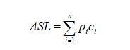

一种以集合为逻辑结构，以查找为“核心”运算，同时包括其他运算的数据结构；由同一累心的数据元素构成的集合。
查找的定义：根据给定的某个值，在查找表中确定一个关键字等于给定值的记录或数据元素。
关键词（Key）：数据元素中某个数据项的值；当数据元素中只有一个数据项时，其关键字就是该数据元素。
查找表分为静态查找表和动态查找表。
静态查找表：只对查找表进行查勋某个特定的数据元素或某个特定数据元素的各种属性的操作。
动态查找表：对查找表进行插入或删除某个数据元素的操作。
用待查关键吗Key依次和查找表中元素的关键码进行比较，若找到相等的，就称为查找成功，假设吧整个查找表找完都没有找到和给定关键码相等的元素，则称为查找失败。顺序查找附加空间开销为0（1），0下标对应的单元。
顺序查找的特点：
（1）算法简单、对查找表的结点之间没有排序要求，表的存储结构也无任何要求（顺序和链式）；
（2）n很大时查找效率很低，与n成反比、平均约为2;
（3）改进措施：非等概率查找时，可按照查找概率进行排序。
折半查找表中结点必须按关键字有序排列；查找表必须顺序存储。 用待查关键字k与线性表中间位置的结点的关键字进行比较：
（1）若相等，则查找成功；
（2）若不相等，则根据比较的结果确定下一步操作：
①若k小于中间结点的关键字，则对前半个子表进行查找；
②若k大于中间结点的关键字，则对后半个子表进行查找。
若整张表都没有满足条件的结点，则查找失败。
为确定记录在表中的位置所进行的和关键字比较的次数的期望值；如下式所示
其中n为查找表的长度，pi为查找第i个元素的概率，ci为查找第i个元素时通给定值K比较的次数。
衡量查找算法的标准为：
（1）平均查找长度；
（2）算法所需要的存储量和算法的复杂性等。
根据设定的哈希函数H和所选中的处理冲突的方法，将一组关键字映像到一个有限的、地址连续的地址集（区间）上，并以关键字在地址集中的“像”H（key）作为相应记录在表中的存储位置，如此构造所得的查找表称之为“哈希表”。
H（key）=a·key+b （a,b为常数）。
优点：以关键码key的某个线性函数值为哈希地址，不会产生冲突。
缺点：要占用连续地址空间，空间效率低。
将具有相同哈希地址的记录存储在同一个单链表中，m个哈希地址就对应m个单链表，然后用一个一维数组将m个单链表的表头指针存储起来，形成一个动态的结构。